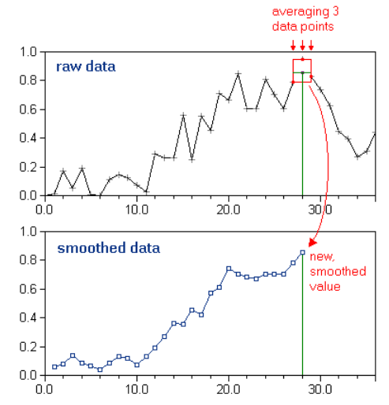

Topographic data, as many other types of data, are noisy due to DEM creation and subsequent topographic derivatives. Therefore, it is often a good idea to smooth variables by averaging them using a moving window. The principle is very simple: replace a data point with the average of its neighbours, i.e. a window around the point (source).
*
The implementation of a moving window can simply be done either in Excel, R… In R, the suitable function is the rollmean() function from the zoo package (resource).
For topographic analyses, smoothing data is typically achieved on slope for Slope-Area graphs and on stream power index along the river longitudinal distance.
Some resources to better understand the theory about concavity, channel steepness and chi metrics:
Following Strahler (1952), the hypsometric curve relates horizontal cross-sectional area of a drainage basin to relative elevation above basin mouth. As both parameters (in x and y) are dimensionless, curves can be described and compared irrespective of basin size or shape. In other words, it describes the relative proportion of the watershed area that lies at or above a given height relative to the total relief of the watershed (Luo, 1998). Differences in the shape of the curve are related to the degree of disequilibrium in the balance of erosive and tectonic forces (Weissel and Pratson, 1994).
References
In QGIS, use the Hypsometric curves toolbox available in the QGIS processing tools “Raster terrain analysis” (not “Hypsometry” from SAGA GIS).
You can also consider to check the box “Use % of are instead of absolute value”, in order to have a relative hypsometric curve and to allow comparison between catchments.

The output is a csv file, which contains the binned values for relative downslope catchment area and absolute elevation. You will therefore need to post-process the values to plot correct hypsometric curves.
Relative height is computed by normalising height over its range, i.e. [(z - z_{min}) / (z_{max} - z_{min}) ] * 100
Relative upslope area is computed as follows: 100 - downslope area
Visually, you should end up with something like:

Here is the example file: link